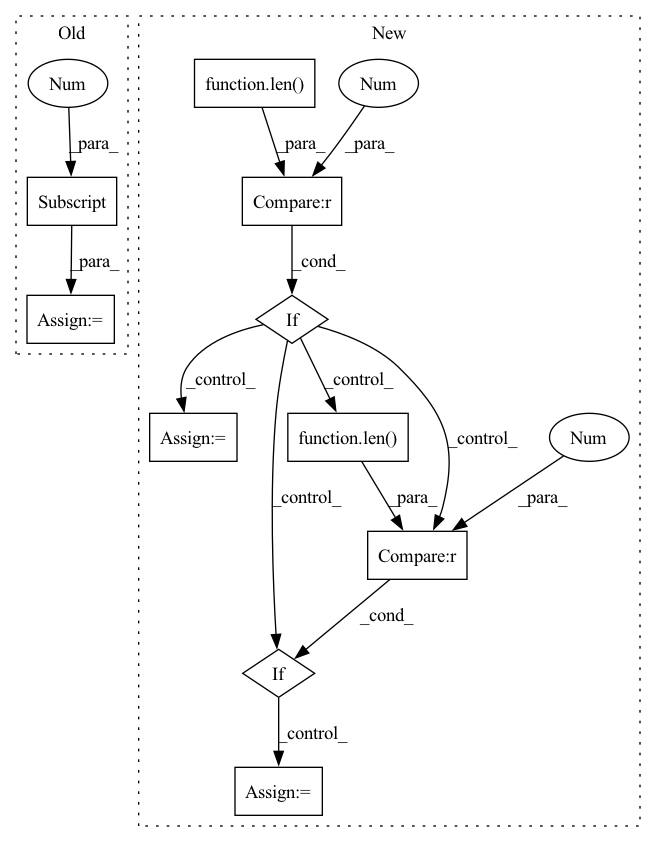

Pattern ID :27657
Before Change
def layer_act_(net, layer, algo, algo_name, image, label, log_dir, show_imgs=True, columns=10):
layer_a = LayerGradientXActivation(net, layer)
a_attr = layer_a.attribute(image, label)
num_channels = a_attr.shape[1]
column = columns
layer_info = str(layer)
img_title = f"{algo_name} of {layer_info}"
show_img_grid(a_attr[0], math.ceil(num_channels/column), column, log_dir, algo_name,After Change
def layer_act_(net, layer, algo, algo_name, image, label, log_dir, attr_kwargs=None, show_imgs=True, columns=10):
layer_a = algo(net, layer)
a_attr = layer_a.attribute(image, **attr_kwargs)[0]
if len(a_attr.shape) == 1 : // Attribution has one dimension only - usually seen in linear layers.
l_weight = layer.weight
plot_linear_layer_attributions(a_attr, l_weight, log_dir)
elif len(a_attr.shape) == 3 : // Attribution has three dimensions - usually seen in convolution layers.
num_channels = a_attr.shape[0]
layer_info = str(layer)
img_title = f"{algo_name} of {layer_info}"
show_img_grid(a_attr, math.ceil(num_channels/columns), columns, log_dir, algo_name,In pattern: SUPERPATTERN
Frequency: 3
Non-data size: 10
Instances Fragment ID: 82096582
Project Name: humancompatibleai/eirli
Commit Name: 26af22c90376feecd2202e6cbddb748771b99e9e
Time: 2020-08-31
Author: RPC2@users.noreply.github.com
File Name: src/il_representations/scripts/interpret.py
M Class Name: AnonimousClass
N Class Name: AnonimousClass
M Method Name: layer_act_(10)
N Method Name: layer_act_(9)
M Parent Class:
N Parent Class:
M File Name: src/il_representations/scripts/interpret.py
N File Name: src/il_representations/scripts/interpret.py
M Start Line: 207
M End Line: 213
N Start Line: 180
N End Line: 193
Before Change
img = cv2.cvtColor(img, cv2.COLOR_BGR2RGB)
// following two cases are not explained in the original repo
if img.shape[0] == 2:
img = img[0]
if img.shape[2] == 4:
img = img[:, :, :3]
return imgAfter Change
img = cv2.cvtColor(img, cv2.COLOR_BGR2RGB)
elif type(image) == np.ndarray:
if len(image.shape) == 2 : // grayscale
img = cv2.cvtColor(image, cv2.COLOR_GRAY2BGR)
elif len(image.shape) == 3 and image.shape[2] == 3: // BGRscale
img = image
elif len(image.shape) == 3 and image.shape[2] == 4: // RGBAscale
img = image[:, :, :3]
img = cv2.cvtColor(img, cv2.COLOR_RGB2BGR)
return img
Fragment ID: 82096567
Project Name: fcakyon/craft-text-detector
Commit Name: 3a31dc821230f93229994c2075928fc374d80cf7
Time: 2021-04-07
Author: 34196005+fcakyon@users.noreply.github.com
File Name: craft_text_detector/image_utils.py
M Class Name: AnonimousClass
N Class Name: AnonimousClass
M Method Name: read_image(1)
N Method Name: read_image(1)
M Parent Class:
N Parent Class:
M File Name: craft_text_detector/image_utils.py
N File Name: craft_text_detector/image_utils.py
M Start Line: 11
M End Line: 19
N Start Line: 11
N End Line: 29
Before Change
def layer_act_(net, layer, algo, algo_name, image, label, log_dir, show_imgs=True, columns=10):
layer_a = LayerGradientXActivation(net, layer)
a_attr = layer_a.attribute(image, label)
num_channels = a_attr.shape[1]
column = columns
layer_info = str(layer)
img_title = f"{algo_name} of {layer_info}"
show_img_grid(a_attr[0], math.ceil(num_channels/column), column, log_dir, algo_name,After Change
def layer_act_(net, layer, algo, algo_name, image, label, log_dir, attr_kwargs=None, show_imgs=True, columns=10):
layer_a = algo(net, layer)
a_attr = layer_a.attribute(image, **attr_kwargs)[0]
if len(a_attr.shape) == 1 : // Attribution has one dimension only - usually seen in linear layers.
l_weight = layer.weight
plot_linear_layer_attributions(a_attr, l_weight, log_dir)
elif len(a_attr.shape) == 3 : // Attribution has three dimensions - usually seen in convolution layers.
num_channels = a_attr.shape[0]
layer_info = str(layer)
img_title = f"{algo_name} of {layer_info}"
show_img_grid(a_attr, math.ceil(num_channels/columns), columns, log_dir, algo_name, Fragment ID: 82096579
Project Name: humancompatibleai/eirli
Commit Name: d8cb5dd696dea0db35b687341475a7ffa5b7a22b
Time: 2020-08-31
Author: RPC2@users.noreply.github.com
File Name: src/il_representations/scripts/interpret.py
M Class Name: AnonimousClass
N Class Name: AnonimousClass
M Method Name: layer_act_(10)
N Method Name: layer_act_(9)
M Parent Class:
N Parent Class:
M File Name: src/il_representations/scripts/interpret.py
N File Name: src/il_representations/scripts/interpret.py
M Start Line: 207
M End Line: 213
N Start Line: 180
N End Line: 193